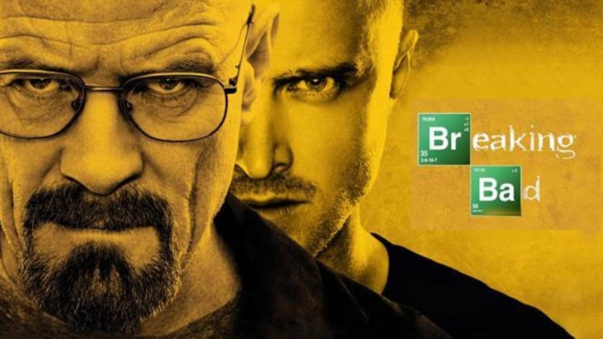

Walter White, a chemistry teacher, discovers that he has cancer and decides to get into the meth-making business to repay his medical debts. His priorities begin to change when he partners with Jesse. At first of Breaking Bad, high school chemistry teacher Walter White is diagnosed with terminal lung cancer. After finding out from Hank Schrader, his DEA agent brother-in-law, how profitable cooking meth can be, Walt teams up with Jesse Pinkman, a former student of his, to make enough money to provide for his family after he's gone.
TWalter and Jesse Pinkman’s camaraderie is one fantastic facet of the show. Although Pinkman is often used by White as a pawn, they are frenemies, with a heartbreaking partners-in-crime relationship. Pinkman’s development is noteworthy as well; his transformation from a reckless and careless addict to a caring man whose actions are well-balanced with his emotions, and his desire to settle down to a more peaceful life is heartwarming.
Walter White’s demise is literally poetry in motion. With his never-give-up attitude, Walter ultimately dies surrounded by his one true love; the meth machines. The process of making meth gave him a renewed sense of hope for life as well as took it away from it – he owed everything to the machines. It is considered one of the greatest endings on TV.
If you have not watched Breaking Bad, it is nearly impossible to explain why the show is kept on such a high pedestal. Walter White’s enigmatic presence coupled with brilliant cinematic sorcery brings out an enriching experience that can only be seen and felt firsthand. This article should propel your need to watch the series even more than before, it should serve its purpose of trying to arouse in you the desire to be consumed by a gripping world of chemistry, drugs, family and insanity which will both warm your hearts and send chills down your spine.
The viewing experience is extremely personal and should not be meddled with. Your favourites might not resonate with mine, and that is absolutely fine. However, when we talk about some cult favourite series that are now considered as some of the all-time greats, Breaking Bad will undoubtedly feature in most lists.